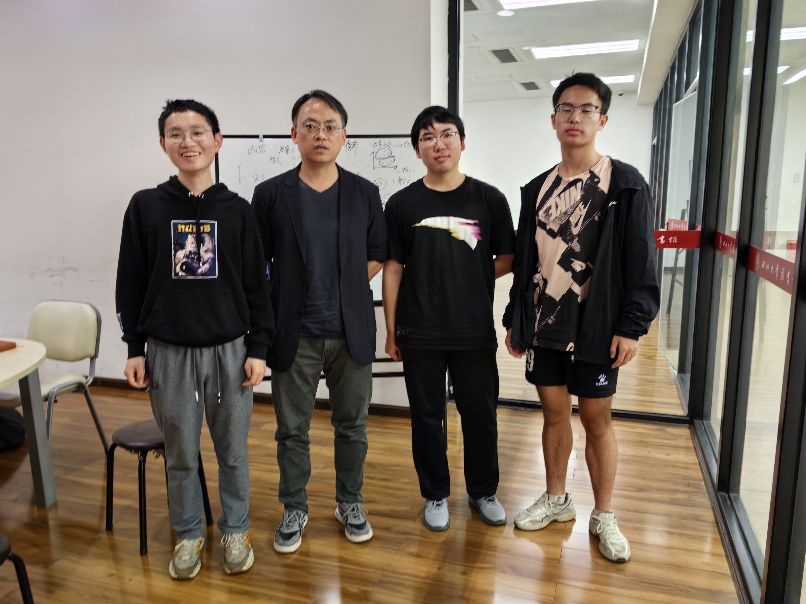

#察内心
杨坤老师就专业课程的学习与同学展开交流。重点指出了需要重视数学、化工原理等较难的专业课，避免挂科。同时，对同学们屡败屡战的学习态度表示鼓励。
同学们表示自己会加大学习力度，争取今年过关。
杨坤老师就自己刷短视频的情况与同学们展开交流，表示要戒掉一件事需要长期坚持，尤其需要注意防止反弹。
杨鑫同学就熬夜事情展开分享，表示自己常常会忍不住熬夜。杨老师也深有同感，建议大家在固定时间、与同伴之间相互督促。
杨坤老师发现，大家会无根据地对于没有到来的事情过分焦虑，但是真正经历了其实没什么。同学们了解到，有时这是一种正常的焦虑，来源于未知的迷茫与担忧。但更多是一种无端的焦虑，所以杨老师建议大家要专注于一件一件小事，把它们拆开做。不要焦虑
杨坤老师根据果农种树需要修剪枝叶这一种植技巧引出，指出我们要专注于主要事情。肖遥同学联系自己的生活实践，讲述自己曾见到果农在管理果树的过程中，会常常定期花重金请专业的修剪员来修剪，保留果树的主干，这样才能让少的果子结得更大更好。反之，如果不修剪，即使看起来很茂密、果子很多，但每一个的品质都不甚好。
因此，大家领会到要在学习生活中抓住主要矛盾，不要让自己被太多东西塞满。
杨坤老师从传统的短板效应出发，指出在新型的社会关系与学术研究中，团队合作是非常重要的。因此在新型研究团队中，由于可以团队合作互补，可能短板就显得不那么重要了。相反地，个人的长板就会成为自己在一个团队中的不可取代之处，于是就可以最大程度地发挥出自己的潜能。
在这一点上，杨坤老师也提到了舒适圈的概念。正如我们应该在团队中注重自己的长板，这里的长板也就是我们的舒适圈。所以我们除了传统的跳出舒适圈，也可以在舒适圈中不断增进自己的长处，最后舒适圈可能自己就扩大了。这可能是更适合于现代科研和团队合作的方式。
杨坤老师就金庸的《天龙八部》与同学们展开交流，就人生的必然性与偶然性引发同学们的思考。
杨坤老师以自己正在写书的经历为例，强调了把大任务拆分成每天的小任务。同学们也联想到了以六级考试为代表的长远任务，明白了列计划后，开始做是最难也是非常重要的。
